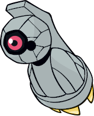

🤖Sabendo mais de Beldum!
Nome: Beldum
Espécie: Pokémon Aço
Tipo: Aço
Habilidades: Clear Body (habilidade padrão), Light Metal (habilidade oculta)
Altura média: 0,6 m
Peso médio: 95,2 kg
Idade: Varia conforme o indivíduo
Temperamento: Reservado, persistente, concentrado e curioso
Habitat ideal: Ambientes amplos, seguros e com espaço para movimentação, exploração e treinamento
Condição: Ativo, funcional e pronto para desenvolver um vínculo com seu novo treinador
Descrição completa
Conheça o Beldum, um Pokémon extraordinário dos tipos Aço e Psíquico, conhecido por seu corpo metálico extremamente resistente, sua capacidade de levitação e sua maneira incomum de perceber o mundo ao redor. Diferentemente de Pokémon que possuem patas, asas ou nadadeiras, Beldum apresenta uma estrutura corporal compacta, semelhante a uma esfera metálica azulada, acompanhada de uma grande garra na extremidade traseira e um olho vermelho localizado na parte frontal. Apesar de sua aparência simples, Beldum é uma criatura fascinante, cuja estrutura combina características mecânicas e habilidades psíquicas. Seu corpo apresenta uma resistência impressionante, permitindo que suporte impactos consideráveis dentro do universo Pokémon. Em vez de caminhar como um animal convencional, ele se movimenta utilizando suas habilidades magnéticas, mantendo-se suspenso e deslocando-se pelo ambiente sem depender de membros locomotores tradicionais. Beldum também é conhecido por sua forma singular de comunicação. Segundo a descrição da espécie no universo Pokémon, seus pensamentos são transmitidos por meio de ondas magnéticas, permitindo que indivíduos da mesma espécie estabeleçam conexões entre si. Essa característica faz com que Beldum seja muito diferente de um animal doméstico comum. Sua convivência exige uma abordagem baseada em observação, paciência e treinamento, respeitando sua natureza incomum e suas capacidades especiais. Seu aspecto metálico, seus movimentos precisos e seu potencial evolutivo fazem dele uma opção interessante para treinadores que procuram um Pokémon resistente, singular e com possibilidades extraordinárias de desenvolvimento.

Voltar